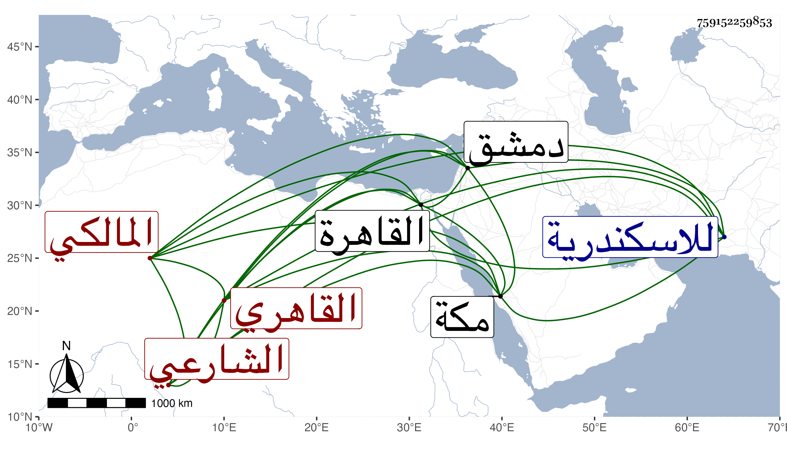

0902Sakhawi.DawLamic.ITO20230111-ara1.EIS1600.759152259853
Biography ID: 759152259853
600
أحمد بن محمد بن الشهاب الشارعي ثم القاهري المالكي . كان أبوه وكيلا بباب ابن الديري فنشأ هذا وتدرب في التوقيع وتعانى في تسجيله الكتابة بقلم الثلث وجاء للمحب بن الشحنة بأسجال عليه فقال إذا كتبت أنت بالثلث فماذا أكتب ثم اقتضى رأيه الكتابة بالنسخ ليحصل التمييز ، وقد استنابه الحسام بن حريز وعينه الظاهر خشقدم للتوجه للمرقب لسماع الدعوى على تمراز المحبوس به ففعل وحكم بإراقة دمه في جمادى الأولى سنة إحدى وسبعين وبقي خائفا يترقب بحيث سافر لمكة وغيرها ونسب إليه بعض من كان في خدمته بها من الأمراء اختلاسا فضيق عليه بحيث رام قتل نفسه وانزعج الأمير لذلك فكف عنه وآل أمره إلى أن صار حين التوقف في عمل الاستبدال بالقاهرة يشارط هو عليها ويخرج للاسكندرية ونحوها فينهيها هناك وهو الآن بدمشق منضم لحاجبها يونس الأشرفي وراج بذلك .
